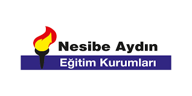

NAO Ders: Sosyal Bilgiler
Amacımız nedir?
Bizim amacımız, okulumuz için erişilmesi kolay bir ders içerik sitesi yapmaktır.
Site zamanla geliştirilecek, içinde interaktif testler bulunduracaktır.
Neden biz?
- Ücretsiz ve erişimi kolay bilgi.
- Organik Zeka ile yapıldı yani el emeği
- Güvenilir bilgi.
- Yerli malı
- Nesibe Aydın Destekli
Ünite Seçiniz: (Şuan sadece 7.sınıflar için hazır)
- Ünite: İletişim
- Ünite: Kültür ve Miras
- Ünite: İnsanlar, Yerler ve Çevreler
- Ünite: Bilim, Teknoloji ve Toplum
- Ünite: Üretim, Dağıtım ve Tüketim

Atilla Altun tarafından Hazırlandı. Bir AP A.Ş. sitesidir.